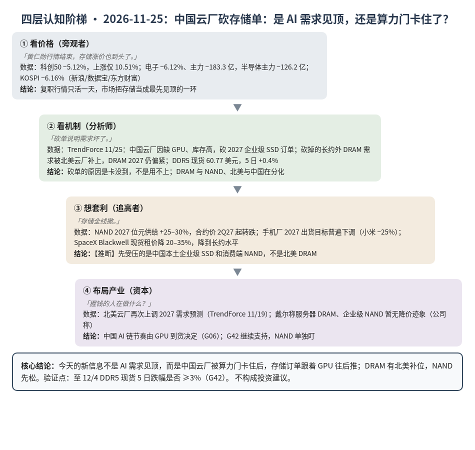
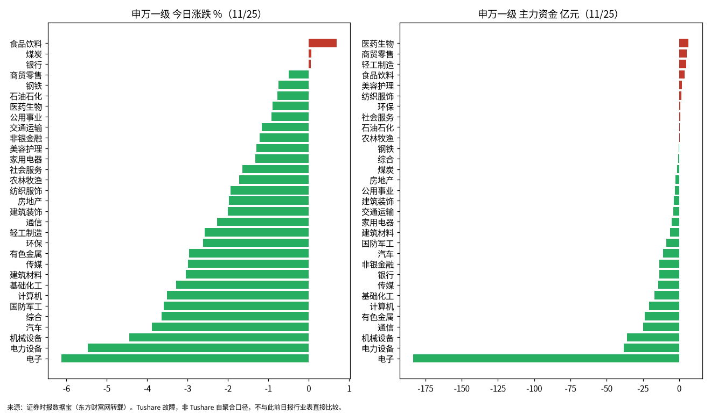
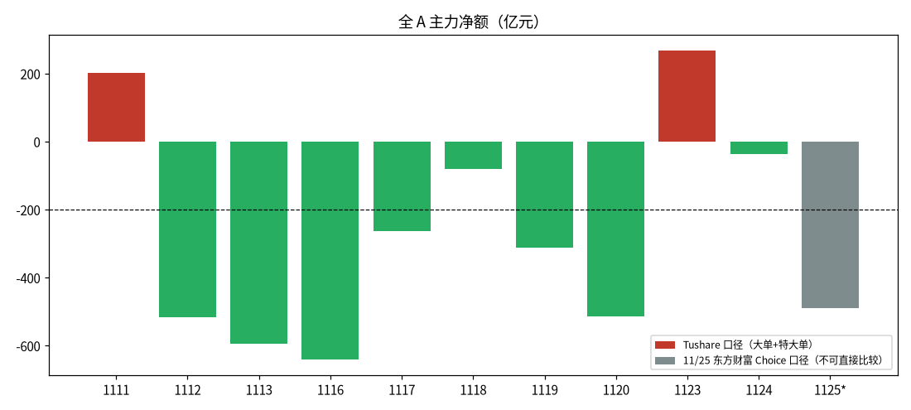

A股投研日报 · 2026-11-25（四层认知版）
- 主线
- 复职行情只活一天，A股半导体和电子被集中抛售，钱躲进消费
- 最重要变化点
- TrendForce 11/25 称中国云厂因缺 GPU 砍 2027 企业级 SSD 订单；同日科创50 −5.12%，上涨家数仅 10.5%
- 机制含义
- 中国 AI 的约束在算力这道门，存储订单跟着 GPU 走；DRAM 有北美补位仍紧，NAND 先松
- 下一个观察点
- 至 12/4 DDR5 16Gb 现货 5 日跌幅是否 ≥3%（G42 证伪线）；11/26 早看 VIX 是否重上 30
本报告为基于公开数据的研究分析，不构成投资建议。
方法：四层认知阶梯 + 历史周期律。Tushare 故障（IP 超限/HTTP 500），今日行情改用新浪、东方财富、证券时报数据宝（见附录）。不构成投资建议。
今日市场概况
上证 −2.03% 收 3,476.47；深成 −3.24%；创业板 −4.19% 收 2,183.58；科创50 −5.12% 收 1,186.14；沪深300 −1.65%；中证1000 −4.44%（新浪行情）。成交 13,927 亿元，较上日缩 2,751 亿（新浪收评），约为 20 日均 16,326 亿的 85%（推算：前 19 日 Tushare + 今日新浪）。上涨 586 家，占 10.51%（数据宝）。主力净流出 489.7 亿（东方财富 Choice）/ 406.9 亿（数据宝），口径与昨日 Tushare 的 −36.1 亿不同，不直接比。申万一级只涨 3 个：食品饮料 +0.69%、煤炭、银行；电子 −6.12%、主力 −183.3 亿，电力设备 −5.47%，机械 −4.44%（数据宝）。美债 10Y 11/24 收 4.91%（美国财政部），今日亚洲时段跌至约 4.88%。KOSPI −6.16% 收 4,697.51，触发卖出侧车（新浪）。DDR5 16Gb 现货 60.77 美元，5 个观测日 +0.4%（TrendForce）。VIX 11/24 收 26.36（CBOE）。
变化点
世界观定位：阶段不变，回退条件不变。世界指标今日天气：整体多云，钱开始变紧、股市偏贵偏热、AI 链有裂缝、中国经济还没回暖。本周五盏灯没有变化；MOVE 回到 98.8，转绿。
和昨天、上周比：上涨占比从 35.0% 掉到 10.5%，近 8 个交易日里仅好于 11/20 的 5.6%。科创50 从 +1.81% 翻成 −5.12%，昨天的验证点命中：复职行情在 A 股只活了一天。韩股同样把前一天的 +6.32% 吐回。
看价格：「黄仁勋行情结束，存储涨价也到头了。」电子主力净流出 183 亿，半导体 126 亿（东方财富），主力净卖出第一是长鑫科技（−17.9 亿，东方财富）。市场把存储当成这轮 AI 交易里最先见顶的一环。
看机制：砍单的是中国云厂，理由是拿不到 GPU，库存又高（TrendForce）。卡没到，配套的 SSD 就不用急着买。DRAM 那边，中国云厂砍掉的长约外需求，北美云厂当即补上，2027 年仍偏紧，只是涨幅逐季收窄；NAND 位元供给 2027 年增 25–30%，合约价 2Q27 起全面转跌（11/19 报告）。消费端也在缩：手机厂 2027 出货目标普遍下调，小米约 9,000 万台（−25%），vivo −29%，品牌靠降存储容量压成本（媒体报道，经新浪）。另一处裂缝：SpaceX 把 Blackwell 现货租价从每小时 15–15.5 美元降到 10–12 美元，但只是降到长约大单的水平（SemiAnalysis，经新浪）。
想套利：「存储全线撤。」把中国的算力门当成全球需求见顶，就错了。推断北美 DRAM 需求还在上修，现货不跌；先受压的是中国本土的企业级 SSD 订单和消费端 NAND。
布局产业：中国 AI 服务器、存储、PCB 的节奏，由 GPU 到货量决定，不由预算决定。这一点和 G06「两道门」一致。G42 读数继续支持，NAND 是反方证据，要单独盯。
中长期展望（3–12 个月与 2027）
3–12 个月：全球账本 DRAM 仍紧（G42），北美上修撑住 P023；中国账本受算力门压着（G06），存储订单先降。P070 三条证伪线未触发。灯④仍黄。
2027：DRAM 2H27 价格走平，NAND 2Q27 转跌，存储内部分化。
什么会改变展望：①DDR5 现货 5 日跌 ≥3%（G42 证伪）；②北美云厂也下修存储订单或资本开支（P023、P070）；③中国 GPU 进口或国产卡放量明显加快，中国云厂订单回补（G06）。
七、明日/本周验证点（可证伪）
- 至 12/4 DDR5 16Gb 现货 5 个观测日跌幅 ≥3%：触发即 G42 证伪。
- 11/26 早看 VIX 11/25 收盘：≥30 则恐慌重来（11/24 为 26.36）。
- 12/4 融资余额较 11/20 回升 ≥+3%（11/24 为 2.135 万亿，较前日 +2.2 亿）。
- 至 11/27 科创50 收回 1,250 点（11/24 收盘水平）；收不回说明抛压不只来自美股。
附录 A：机会表、检查清单、验证点回顾、风险复核
机会表（产业/环节层面，不构成投资建议）
| 环节 | 变化信号 | 认知层级 | 关键风险 / 证伪 |
|---|---|---|---|
| 服务器 DRAM、HBM（全球账本） | TrendForce：北美云厂补上中国砍掉的 DRAM 需求，2027 仍偏紧；DDR5 现货 60.77 美元 | 第 2→4 层 | DDR5 5 日跌 ≥3%（G42）；北美云厂下修（P023） |
| 企业级 SSD / NAND（尤其中国客户） | 中国云厂砍 2027 订单；NAND 合约价 2Q27 起转跌 | 第 3 层：陷阱（别拿 DRAM 逻辑套 NAND） | 中国 GPU 到货加快，订单回补 |
| 中国 AI 服务器配套（PCB、光模块国内份额） | 节奏跟 GPU 到货，不跟预算 | 第 2 层 | 国产卡放量超预期（G06、P065） |
检查清单应用
- 缺口性质：中国云厂的 GPU 短缺是人为缺口（出口管制 + 11/19 BIS 境外代工规则），不是需求消失；NAND 过剩是物理缺口反向（扩产 + 制程转进，位元 +25–30%）。
- 替代弹性：DRAM 需求方弹性低，北美当日补位；中国云厂拿不到卡时，存储订单可以推迟，替代弹性高。
- 领先 vs 滞后：领先＝DDR5 现货、NAND 现货（11/19 报告称近期跌超 20%）、GPU 租价、中国云厂库存；滞后＝存储厂季报、A 股指数。
上一交易日验证点回顾（11/24 → 11/25）
| # | 验证点 | 读数 | 判定 |
|---|---|---|---|
| 1 | 11/25 科创50 收跌 ≥3%，则复职行情只活一天 | −5.12% | 命中 |
| 2 | 12/4 融资余额较 11/20 回升 ≥+3% | 11/24 两市 21,350.27 亿，较前日 +2.20 亿（交易所口径，新浪） | 待验证 |
| 3 | 至 11/25 美股收盘 VIX 再上 30 | 11/24 收 26.36；11/25 美股未收盘，纳指期货 20:05 约 −3% | 待验证 |
| 4 | 至 11/27 DDR5 16Gb 跌破 58.85 美元 | 60.77（11/25） | 未触发 |
供应链风险敞口（人工复核版）：脚本版见 risk_section_20261125.md。口径为 GB300/NVL72 当量柜年化系统价值；Δ$ 为事件类型假设模板，仅用于排序，非预测。脚本 4 条，误匹配 2 条（台积电亚利桑那奠基、戴尔观点），另 2 条为中期偏紧信号（韩国扩厂招工难、三星 HBM 基础裸片产能不足），非断供。复核后今日有效断供 Δ$≈0，基线维持年化 EL 57.7 亿美元（10/21）。采集降级：GDELT 6 篇；巨潮公告匹配未恢复。
总账（今日已改）：只追加证据，状态与概率均不改。G06 支持（中国云厂以缺 GPU 为由砍 2027 企业级 SSD 订单）；G42 支持（DDR5 60.77 美元，5 个观测日 +0.4%；TrendForce 称 DRAM 2027 仍偏紧），NAND 转跌记为同条反方背景；P023 支持（TrendForce 11/19：北美云厂再次上调 2027 需求预测）；P070 削弱（SpaceX Blackwell 现货租价降 20–35%，未见取消订单，三条证伪线未触发）。
总账打分：新打分 0 条 / 已到期未打分 0 / 14 天内到期 0 / 累计 Brier 0.0225（已打分 1 条）。P071（12/10 到期）还差 15 天。
世界指标数据说明：今晚 update.py 已跑完（数据源 13/15 成功；Tushare 融资余额接口 IP 超限，沿用 11/24 读数），提交 world: 20261125。灯② 实际利率 2.79%（FRED 11/23）。VIX 脚本数据更新到 11/24 收盘 26.36（标普数据源 MarketWatch 401，回测表沿用 11/25 早上的结果）；未收上 30、未首穿 20/25/30/35/40，故不写 VIX 预警行。
接口状态（今日）：Tushare（api.waditu.com 返回「IP 数量超限」，api.tushare.pro 返回 HTTP 500），20:18–20:45 北京时间多次重试未恢复。替代来源：指数收盘与成交（新浪行情 hq.sinajs.cn，昨收与 Tushare 11/24 收盘逐一核对一致）；全市场成交额（新浪 7x24 收评）；上涨家数、申万一级涨跌与主力资金（证券时报数据宝，东方财富网转载）；全 A 主力（东方财富 Choice）；个股中位数 −3.58%（新浪全 A 行情 5,001 只有成交个股计算）。行业口径从 Tushare 自聚合改为申万一级，和此前日报的行业表不直接比较。龙虎榜、北向十大成交、指数估值未取得。
本报告为基于公开数据的研究分析，不构成任何投资建议。

一句话总结：卡没到，单就推迟；先松的是 NAND 和中国订单，不是北美的 DRAM。
附录：市场数据（证据底稿）


指数（新浪行情；5日/20日/MA20 由新浪日 K 收盘计算；成交为指数口径）
| 指数 | 收盘 | 今日% | 5日% | 20日% | MA20 | 成交(亿) |
|---|---|---|---|---|---|---|
| 上证指数 | 3,476.47 | -2.03 | -3.10 | -5.57 | 3,613.37 | 6,527.09 |
| 深证成指 | 10,086.35 | -3.24 | -5.38 | -12.09 | 10,878.92 | 7,303.88 |
| 创业板指 | 2,183.58 | -4.19 | -5.54 | -17.12 | 2,399.55 | 3,548.77 |
| 科创50 | 1,186.14 | -5.12 | -4.96 | -7.54 | 1,240.16 | 822.83 |
| 上证50 | 2,751.85 | -0.82 | -0.46 | -0.04 | 2,773.24 | 1,240.84 |
| 沪深300 | 3,898.24 | -1.65 | -2.15 | -4.55 | 4,013.65 | 4,109.85 |
| 中证500 | 5,890.41 | -3.63 | -6.24 | -11.30 | 6,384.73 | 2,225.61 |
| 中证1000 | 5,541.55 | -4.44 | -8.45 | -15.76 | 6,222.59 | 2,449.60 |
| 北证50 | 755.87 | -4.75 | -9.13 | -20.17 | 857.68 | 97.33 |
市场宽度与资金
| 项目 | 读数 | 来源 |
|---|---|---|
| 全市场成交额 | 13,927 亿（上日 16,678 亿） | 新浪 7x24 收评 |
| 20 日均成交 | 16,326 亿（今日为其 85%） | 推算：Tushare 10/29–11/24 共 19 日 + 今日新浪 |
| 上涨 / 下跌 | 586（10.51%）/ 4,926 | 证券时报数据宝 |
| 个股涨跌中位数 | -3.58% | 新浪全 A 行情，5001 只有成交个股 |
| ≥+9.8% / ≤−9.8%（近似涨跌停） | 63 / 168 | 同上 |
| 全 A 主力净额 | −489.68 亿（占成交 3.54%） | 东方财富 Choice（观点网转载） |
| 全 A 主力净额（另一口径） | −406.92 亿；创业板 −100.72 亿，科创板 −95.96 亿，沪深300 成份 −142.88 亿 | 证券时报数据宝 |
| 半导体板块主力 | −126.22 亿 | 东方财富（南方财经转载） |
| 两市融资余额（11/24） | 21,350.27 亿，较前日 +2.20 亿 | 沪深交易所口径，新浪 7x24 |
| 美债 10Y（11/24） | 4.91% | 美国财政部 |
| KOSPI | 4,697.51（−6.16%） | 新浪 7x24 |
| DDR5 16Gb 现货 | 60.77 美元（11/25） | TrendForce，世界指标缓存 |
| VIX（11/24） | 26.36 | CBOE |
申万一级行业涨跌与主力资金（证券时报数据宝，11/25）
| 行业 | 今日% | 主力(亿) |
|---|---|---|
| 医药生物 | -0.89 | 6.34 |
| 商贸零售 | -0.50 | 5.40 |
| 轻工制造 | -2.58 | 4.91 |
| 食品饮料 | 0.69 | 3.70 |
| 美容护理 | -1.30 | 1.77 |
| 纺织服饰 | -1.94 | 1.58 |
| 环保 | -2.62 | 0.74 |
| 社会服务 | -1.64 | 0.73 |
| 石油石化 | -0.78 | 0.51 |
| 农林牧渔 | -1.72 | 0.26 |
| 钢铁 | -0.75 | -0.48 |
| 综合 | -3.64 | -0.56 |
| 煤炭 | 0.07 | -1.38 |
| 房地产 | -1.98 | -2.51 |
| 公用事业 | -0.92 | -3.11 |
| 建筑装饰 | -2.01 | -3.84 |
| 交通运输 | -1.16 | -4.01 |
| 家用电器 | -1.32 | -5.27 |
| 建筑材料 | -3.04 | -6.30 |
| 国防军工 | -3.59 | -8.82 |
| 汽车 | -3.88 | -11.07 |
| 非银金融 | -1.21 | -13.65 |
| 银行 | 0.05 | -13.70 |
| 传媒 | -2.99 | -14.28 |
| 基础化工 | -3.28 | -17.22 |
| 计算机 | -3.51 | -20.76 |
| 有色金属 | -2.97 | -23.64 |
| 通信 | -2.27 | -24.73 |
| 机械设备 | -4.44 | -35.88 |
| 电力设备 | -5.47 | -38.32 |
| 电子 | -6.12 | -183.33 |
接口状态
| 接口 | 状态 |
|---|---|
| Tushare（trade_cal/daily/moneyflow/index_daily 等） | 失败：api.waditu.com「IP 数量超限」，api.tushare.pro HTTP 500；20:18–20:45 重试未恢复 |
| 新浪行情 hq.sinajs.cn / 日 K | OK（昨收与 Tushare 11/24 收盘一致） |
| 新浪全 A 行情 Market_Center | OK（5,350 只） |
| 新浪 7x24 | OK 2999 条 |
| 东方财富 push2 行情接口 | 502，未用；改用东方财富网/数据宝文章 |
| 龙虎榜、北向十大成交、指数估值 | 未取得 |
注：行业口径由 Tushare 自聚合改为申万一级；主力净额为第三方口径，与此前日报 Tushare 口径（大单+特大单）不直接比较。